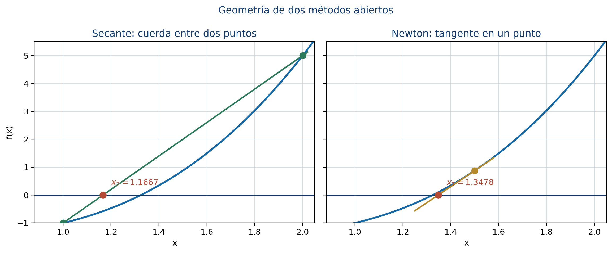

5 Métodos numéricos para la estimación de raíces
El Teorema Fundamental del Álgebra garantiza la existencia de raíces complejas, pero un problema computacional exige localizar las raíces reales, separarlas y producir aproximaciones verificables. Este capítulo desarrolla las siete secciones de la Unidad 5 del programa de Álgebra Superior de la Facultad de Ciencias de la UASLP (Universidad Autónoma de San Luis Potosí, Facultad de Ciencias 2011). Cada método se construye primero de manera manual y después se implementa con R base.
Introducción
Para
\[ p(x)=a_nx^n+a_{n-1}x^{n-1}+\cdots+a_1x+a_0, \qquad a_n\ne0, \]
la búsqueda numérica seguirá esta ruta:
- acotar: reducir \(\mathbb R\) a un intervalo finito;
- contar: determinar cuántas raíces reales hay;
- separar: obtener intervalos con una sola raíz;
- aproximar: aplicar un método iterativo;
- validar: revisar tolerancia, error y residuo.
Objetivos
Al terminar el capítulo, el lector podrá:
- calcular cotas de raíces con R;
- detectar cambios de signo sin omitir coeficientes cero;
- construir una sucesión de Sturm mediante división de polinomios;
- implementar Descartes y usar Budan-Fourier;
- programar bisección, secante y Newton sin paquetes;
- evaluar simultáneamente \(p\) y \(p'\) con Horner;
- comparar seguridad, velocidad y costo de los métodos;
- experimentar con tres construcciones auténticas de GeoGebra.
Convención computacional
Como en el capítulo 4, un polinomio se representa mediante sus coeficientes en orden descendente. Por ejemplo,
\[ x^3-x-1 \]
se almacena como c(1, 0, -1, -1).
normalizar_coef <- function(coef, tol = 0) {
coef <- as.numeric(coef)
while (length(coef) > 1L && abs(coef[1L]) <= tol) {
coef <- coef[-1L]
}
coef
}
evaluar_horner <- function(coef, x) {
coef <- normalizar_coef(coef)
valor <- rep(coef[1L], length(x))
if (length(coef) > 1L) {
for (a in coef[-1L]) valor <- valor * x + a
}
valor
}
derivar_polinomio <- function(coef) {
coef <- normalizar_coef(coef)
grado <- length(coef) - 1L
if (grado == 0L) return(0)
coef[-length(coef)] * seq(grado, 1L)
}5.1 Acotación de raíces
La cota de Cauchy establece que toda raíz \(z\) satisface
\[ |z|\le R, \qquad R=1+\max_{0\le k<n}\left|\frac{a_k}{a_n}\right|. \]
Cálculo manual
Para
\[ p(x)=x^4+x^3-7x^2-x+6, \]
se obtiene
\[ R=1+\max\{1,7,1,6\}=8. \]
Por tanto, todas las raíces reales están en \([-8,8]\).
Implementación en R
cota_cauchy <- function(coef) {
coef <- normalizar_coef(coef)
if (length(coef) == 1L) return(NA_real_)
1 + max(abs(coef[-1L] / coef[1L]))
}
p4 <- c(1, 1, -7, -1, 6)
R <- cota_cauchy(p4)
c(-R, R)La cota es segura, pero puede ser amplia. Una tabla de valores dentro de \([-R,R]\) ayuda a localizar subintervalos con cambios de signo.
malla <- seq(-R, R, by = 0.5)
tabla_malla <- data.frame(
x = malla,
p = evaluar_horner(p4, malla)
)
head(tabla_malla)
Actividad GeoGebra
- Modifique los coeficientes del polinomio desde los deslizadores.
- Compare la cota \([-R,R]\) con las raíces visibles.
- Cambie el tamaño de la malla y registre qué intervalos presentan cambio de signo.
- Construya un ejemplo con una raíz de multiplicidad par y explique por qué no aparece un cambio de signo.
5.2 Separación de raíces
Si \(p(a)p(b)<0\), la continuidad garantiza al menos una raíz en \((a,b)\). Para detectar automáticamente estos intervalos:
separar_por_signo <- function(coef, a, b, paso = 0.25, tol = 1e-12) {
x <- seq(a, b, by = paso)
if (tail(x, 1L) < b) x <- c(x, b)
y <- evaluar_horner(coef, x)
exactas <- which(abs(y) <= tol)
cambios <- which(y[-length(y)] * y[-1L] < 0)
intervalos <- if (length(cambios)) {
data.frame(
izquierda = x[cambios],
derecha = x[cambios + 1L],
f_izquierda = y[cambios],
f_derecha = y[cambios + 1L]
)
} else {
data.frame()
}
list(
raices_en_malla = x[exactas],
intervalos = intervalos
)
}
separar_por_signo(p4, -8, 8, paso = 0.4)Verificar unicidad
Un cambio de signo demuestra existencia, no unicidad. Si \(p'\) no cambia de signo y no se anula en \([a,b]\), entonces \(p\) es estrictamente monótona y la raíz es única.
Para \(f(x)=x^3-x-1\) se tiene, exactamente,
\[ f'(x)=3x^2-1\geq 2\qquad\text{para }x\in[1,2]. \]
Por tanto, \(f\) es estrictamente creciente y la raíz es única. El siguiente cálculo sólo confirma numéricamente esa cota; el muestreo no sustituye la demostración anterior.
fcoef <- c(1, 0, -1, -1)
dfcoef <- derivar_polinomio(fcoef)
c(
f_1 = evaluar_horner(fcoef, 1),
f_2 = evaluar_horner(fcoef, 2),
min_derivada = min(evaluar_horner(dfcoef, seq(1, 2, length.out = 201)))
)El cambio de signo prueba existencia y la desigualdad exacta para la derivada prueba unicidad en \([1,2]\).
Una raíz de multiplicidad par puede tocar el eje sin cambiar de signo. Para no omitirla, se deben analizar \(p'\) y el máximo común divisor de \(p\) con \(p'\), o usar un conteo de Sturm después de eliminar factores repetidos.
5.3 Teorema de Sturm
La sucesión de Sturm se define por
\[ p_0=p,\qquad p_1=p',\qquad p_{k+1}=-\operatorname{residuo}(p_{k-1},p_k). \]
Si \(V(t)\) cuenta las variaciones de signo de los valores de la sucesión en \(t\), el número de raíces reales distintas en \((a,b)\) es \(V(a)-V(b)\).
División de polinomios en R base
dividir_polinomios <- function(dividendo, divisor, tol = 1e-12) {
dividendo <- normalizar_coef(dividendo, tol)
divisor <- normalizar_coef(divisor, tol)
if (length(divisor) == 1L && abs(divisor) <= tol) {
stop("El divisor no puede ser el polinomio cero.")
}
grado_a <- length(dividendo) - 1L
grado_b <- length(divisor) - 1L
if (grado_a < grado_b) {
return(list(cociente = 0, residuo = dividendo))
}
residuo <- dividendo
cociente <- numeric(grado_a - grado_b + 1L)
for (i in seq_along(cociente)) {
factor <- residuo[i] / divisor[1L]
cociente[i] <- factor
residuo[i:(i + grado_b)] <-
residuo[i:(i + grado_b)] - factor * divisor
}
residuo[abs(residuo) <= tol] <- 0
resto <- if (grado_b == 0L) 0 else tail(residuo, grado_b)
list(
cociente = normalizar_coef(cociente, tol),
residuo = normalizar_coef(resto, tol)
)
}
cambios_signo <- function(valores, tol = 1e-10) {
valores <- valores[abs(valores) > tol]
if (length(valores) < 2L) return(0L)
sum(valores[-1L] * valores[-length(valores)] < 0)
}Construcción de la sucesión
sucesion_sturm <- function(coef, tol = 1e-10) {
p0 <- normalizar_coef(coef, tol)
p1 <- normalizar_coef(derivar_polinomio(p0), tol)
sucesion <- list(p0, p1)
while (length(sucesion[[length(sucesion)]]) > 1L) {
n <- length(sucesion)
r <- dividir_polinomios(sucesion[[n - 1L]], sucesion[[n]], tol)$residuo
r <- normalizar_coef(-r, tol)
if (length(r) == 1L && abs(r) <= tol) break
sucesion[[n + 1L]] <- r
}
sucesion
}
variaciones_sturm <- function(sucesion, x, tol = 1e-10) {
valores <- vapply(sucesion, evaluar_horner, numeric(1), x = x)
cambios_signo(valores, tol)
}
contar_raices_sturm <- function(coef, a, b, tol = 1e-10) {
if (a >= b) stop("Se requiere a < b.")
if (abs(evaluar_horner(coef, a)) <= tol ||
abs(evaluar_horner(coef, b)) <= tol) {
stop("Los extremos del intervalo no deben ser raíces del polinomio.")
}
s <- sucesion_sturm(coef, tol)
variaciones_sturm(s, a, tol) - variaciones_sturm(s, b, tol)
}
sturm_x3_x <- sucesion_sturm(c(1, 0, -1, 0))
sturm_x3_x
contar_raices_sturm(c(1, 0, -1, 0), -2, 2)El resultado es 3, que coincide con las raíces \(-1\), \(0\) y \(1\). Para raíces múltiples debe trabajarse con la parte libre de cuadrados del polinomio.
Separación certificada
Una estrategia robusta subdivide \([-R,R]\) y conserva los intervalos donde Sturm cuenta exactamente una raíz. A diferencia del simple cambio de signo, este procedimiento también detecta intervalos asociados a raíces pares cuando se ha preparado correctamente el polinomio.
5.4 Regla de los signos de Descartes
Los coeficientes cero se eliminan antes de contar variaciones. El número de raíces positivas es el número de variaciones de \(p(x)\) o ese número menos un entero par. Para las negativas se usa \(p(-x)\).
coef_p_menos_x <- function(coef) {
coef <- normalizar_coef(coef)
grado <- length(coef) - 1L
coef * (-1) ^ seq(grado, 0L)
}
posibilidades_descartes <- function(variaciones) {
seq(variaciones, 0L, by = -2L)
}
descartes <- function(coef) {
vp <- cambios_signo(coef)
vn <- cambios_signo(coef_p_menos_x(coef))
list(
variaciones_positivas = vp,
posibles_positivas = posibilidades_descartes(vp),
variaciones_negativas = vn,
posibles_negativas = posibilidades_descartes(vn)
)
}
descartes(p4)Para p4 aparecen las posibilidades \(2\) o \(0\) en ambos signos. Sturm puede resolver la ambigüedad contando exactamente las raíces en \((-R,0)\) y \((0,R)\).
c(
negativas = contar_raices_sturm(p4, -R, -1e-8),
positivas = contar_raices_sturm(p4, 1e-8, R)
)Budan-Fourier
Budan-Fourier cuenta variaciones en
\[ p(t),p'(t),\ldots,p^{(n)}(t). \]
La diferencia entre las variaciones en \(a\) y \(b\) es una cota superior para el número de raíces en \((a,b]\) y difiere del número real por un entero par.
variaciones_budan <- function(coef, x, tol = 1e-10) {
valores <- numeric(0)
actual <- normalizar_coef(coef)
repeat {
valores <- c(valores, evaluar_horner(actual, x))
if (length(actual) == 1L) break
actual <- derivar_polinomio(actual)
}
cambios_signo(valores, tol)
}
cota_budan <- function(coef, a, b) {
variaciones_budan(coef, a) - variaciones_budan(coef, b)
}
cota_budan(p4, -4, 0)Descartes y Budan-Fourier filtran posibilidades; Sturm certifica el conteo exacto.
5.5 Estimación mediante bisección
En cada paso se calcula el punto medio y se conserva la mitad con cambio de signo.
Algoritmo en R
biseccion <- function(coef, a, b, tol = 1e-8, max_iter = 100L) {
fa <- evaluar_horner(coef, a)
fb <- evaluar_horner(coef, b)
if (abs(fa) <= tol) return(data.frame(iter = 0L, a = a, b = a, x = a, fx = fa, error = 0))
if (abs(fb) <= tol) return(data.frame(iter = 0L, a = b, b = b, x = b, fx = fb, error = 0))
if (fa * fb > 0) stop("Los extremos deben tener signos opuestos.")
historial <- vector("list", max_iter)
for (k in seq_len(max_iter)) {
m <- (a + b) / 2
fm <- evaluar_horner(coef, m)
error <- (b - a) / 2
historial[[k]] <- data.frame(iter = k, a = a, b = b, x = m, fx = fm, error = error)
if (abs(fm) <= tol || error <= tol) break
if (fa * fm < 0) {
b <- m
fb <- fm
} else {
a <- m
fa <- fm
}
}
do.call(rbind, historial[seq_len(k)])
}
hist_bis <- biseccion(fcoef, 1, 2, tol = 1e-8)
head(hist_bis, 6)
tail(hist_bis, 1)
Actividad GeoGebra
- Inicie con \([1,2]\) para \(x^3-x-1\).
- Avance una iteración a la vez y anote el intervalo conservado.
- Compare la longitud visual con \((b_0-a_0)/2^n\).
- Descargue el archivo
.ggby cambie el polinomio.
5.6 Estimación mediante el método de la secante
La fórmula es
\[ x_{n+1}=x_n-f(x_n) \frac{x_n-x_{n-1}}{f(x_n)-f(x_{n-1})}. \]
Implementación
secante <- function(coef, x0, x1, tol = 1e-8, max_iter = 100L) {
f0 <- evaluar_horner(coef, x0)
f1 <- evaluar_horner(coef, x1)
historial <- vector("list", max_iter)
for (k in seq_len(max_iter)) {
denominador <- f1 - f0
if (abs(denominador) <= .Machine$double.eps) {
stop("La pendiente de la secante es numéricamente nula.")
}
x2 <- x1 - f1 * (x1 - x0) / denominador
f2 <- evaluar_horner(coef, x2)
cambio <- abs(x2 - x1)
historial[[k]] <- data.frame(iter = k, x = x2, fx = f2, cambio = cambio)
if (abs(f2) <= tol || cambio <= tol) break
x0 <- x1
f0 <- f1
x1 <- x2
f1 <- f2
}
do.call(rbind, historial[seq_len(k)])
}
hist_sec <- secante(fcoef, 1, 2, tol = 1e-10)
hist_secLa secante suele necesitar menos iteraciones que la bisección y no utiliza derivadas. A cambio, no conserva un intervalo seguro y puede fallar si los valores funcionales son casi iguales.
5.7 Estimación mediante el método de Newton
Newton usa la tangente:
\[ x_{n+1}=x_n-\frac{p(x_n)}{p'(x_n)}. \]
Horner simultáneo para \(p\) y \(p'\)
horner_valor_derivada <- function(coef, x) {
coef <- normalizar_coef(coef)
grado <- length(coef) - 1L
if (grado == 0L) return(c(valor = coef, derivada = 0))
b <- coef[1L]
caux <- b
if (grado > 1L) {
for (i in 2L:grado) {
b <- coef[i] + x * b
caux <- b + x * caux
}
}
b <- coef[length(coef)] + x * b
c(valor = b, derivada = caux)
}
horner_valor_derivada(fcoef, 1.5)Newton-Horner en R
newton_horner <- function(coef, x0, tol = 1e-8, max_iter = 100L, multiplicidad = 1) {
historial <- vector("list", max_iter)
for (k in seq_len(max_iter)) {
vd <- horner_valor_derivada(coef, x0)
if (abs(vd["derivada"]) <= .Machine$double.eps) {
stop("La derivada es numéricamente nula.")
}
x1 <- x0 - multiplicidad * vd["valor"] / vd["derivada"]
f1 <- evaluar_horner(coef, x1)
cambio <- abs(x1 - x0)
historial[[k]] <- data.frame(iter = k, x = x1, fx = f1, cambio = cambio)
if (abs(f1) <= tol || cambio <= tol) break
x0 <- x1
}
do.call(rbind, historial[seq_len(k)])
}
hist_newton <- newton_horner(fcoef, 1.5, tol = 1e-12)
hist_newton
Actividad GeoGebra
- Desplace los puntos iniciales de la secante y observe su intersección con el eje.
- Desplace el punto inicial de Newton y compare la tangente.
- Localice una posición donde la derivada sea pequeña.
- Explique por qué la construcción predice un paso de Newton muy grande.
Raíz múltiple
Para \(p(x)=(x-1)^4\), Newton ordinario converge lentamente. Si se conoce \(m=4\), use:
raiz_multiple <- c(1, -4, 6, -4, 1)
newton_horner(raiz_multiple, 2, tol = 1e-12, multiplicidad = 1)
newton_horner(raiz_multiple, 2, tol = 1e-12, multiplicidad = 4)La versión modificada incorpora la multiplicidad y puede recuperar convergencia cuadrática.
Comparación reproducible
resumen_metodos <- data.frame(
metodo = c("Bisección", "Secante", "Newton-Horner"),
iteraciones = c(nrow(hist_bis), nrow(hist_sec), nrow(hist_newton)),
aproximacion = c(tail(hist_bis$x, 1), tail(hist_sec$x, 1), tail(hist_newton$x, 1)),
residuo = abs(c(tail(hist_bis$fx, 1), tail(hist_sec$fx, 1), tail(hist_newton$fx, 1)))
)
resumen_metodos| Método | Requisito | Fortaleza | Riesgo |
|---|---|---|---|
| Bisección | intervalo con cambio de signo | garantía y cota de error | convergencia lineal |
| Secante | dos aproximaciones | evita derivadas | denominador pequeño o alejamiento |
| Newton-Horner | punto inicial y derivada | convergencia cuadrática local | derivada pequeña o inicio inadecuado |
Laboratorio del capítulo
Trabaje con
\[ p(x)=x^5-3x^4-3x^3+11x^2-6x. \]
- Calcule la cota de Cauchy.
- Use Descartes para las posibilidades positivas y negativas.
- Aplique Sturm para contar raíces en \((-R,0)\) y \((0,R)\).
- Separe cada raíz en un intervalo.
- Aproxime cada una con bisección, secante y Newton-Horner.
- Compare iteraciones y residuos con una misma tolerancia.
- Represente el polinomio en la construcción GeoGebra de localización.
- Documente un caso donde un método abierto necesite cambiar sus datos iniciales.
Errores frecuentes
- Omitir coeficientes cero y alterar el grado del polinomio.
- Usar una cota como si fuera una raíz aproximada.
- Concluir unicidad a partir de un cambio de signo.
- Suponer que una malla fina detecta todas las raíces.
- Contar ceros como cambios de signo en Descartes o Sturm.
- Aplicar bisección sin comprobar signos opuestos.
- Ignorar un denominador casi nulo en secante.
- Continuar Newton cuando la derivada es demasiado pequeña.
- Confundir un residuo pequeño con una cota automática del error;
- comparar métodos con tolerancias o criterios de paro diferentes.
Ejercicios graduados
Nivel 1
- Use
cota_cauchy()con \(2x^4-3x^2+7x-5\). - Verifique las posibilidades de Descartes para \(x^5-2x^4+x^2-3\).
- Ejecute seis iteraciones de bisección para \(x^3-2\) en \([1,2]\).
- Grafique el historial de error de bisección en escala logarítmica.
Nivel 2
- Use
sucesion_sturm()para \(x^3-x\) y explique cada polinomio de la lista. - Separe las cuatro raíces de \(x^4-5x^2+4\).
- Compare secante y Newton-Horner para \(x^3-x-1\) con tolerancia \(10^{-10}\).
- Modifique
biseccion()para registrar el número de evaluaciones funcionales.
Nivel 3
- Programe una rutina que subdivida \([-R,R]\) hasta obtener intervalos con conteo de Sturm igual a uno.
- Implemente Newton con protección: si el paso sale del intervalo, use una bisección.
- Estudie la convergencia de Newton ordinario y modificado para \((x-1)^m\), con \(m=2,3,4\).
- Diseñe una prueba automática que compare las raíces encontradas con
polyroot()sin usarlo como justificación teórica.
Proyecto integrador
Elija un polinomio real de grado entre \(4\) y \(7\) con al menos tres raíces reales. Construya un informe reproducible que incluya cota, Descartes, Sturm, separación, bisección, secante, Newton-Horner, tablas de iteraciones, gráfica del error y una exploración GeoGebra. Todas las funciones deben usar R base y todos los resultados numéricos deben acompañarse de tolerancia y residuo.
Síntesis
La estimación confiable de raíces es un proceso, no una fórmula única. Cauchy y la malla delimitan la búsqueda; Descartes y Budan-Fourier reducen posibilidades; Sturm cuenta; bisección aporta seguridad; secante evita derivadas; Newton-Horner aprovecha la estructura polinómica para lograr rapidez. R permite conservar todo el historial de cálculo y GeoGebra hace visible la geometría de cada iteración.
Materiales complementarios del capítulo
Video del capítulo
El enlace al video se incorporará cuando esté disponible.
| Material | Descripción | Acceso |
|---|---|---|
| Presentación en PDF | Diapositivas del capítulo para consulta y exposición. | Enlace pendiente |
| Presentación editable | Diapositivas en formato PowerPoint. | Enlace pendiente |
| Infografía | Síntesis visual de los conceptos principales. | Enlace pendiente |
| Cuaderno de Google Colab | Cuaderno práctico en R sobre localización y aproximación de raíces. | Abrir en Google Colab |
Referencias del capítulo
La secuencia temática sigue Universidad Autónoma de San Luis Potosí, Facultad de Ciencias (2011). La teoría de raíces y polinomios se apoya en Cárdenas et al. (1999) y Kurosh (1987). Los algoritmos y criterios numéricos siguen Burden y Faires (2011) y Chapra y Canale (2015). El código utiliza R base (R Core Team 2026) y las construcciones web emplean la incrustación y la API oficiales de GeoGebra (GeoGebra 2026b, 2026a).